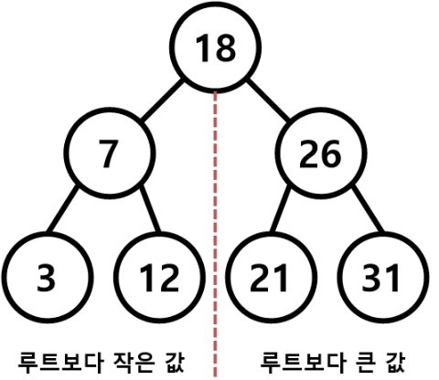
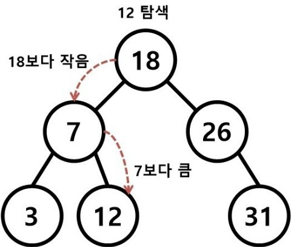
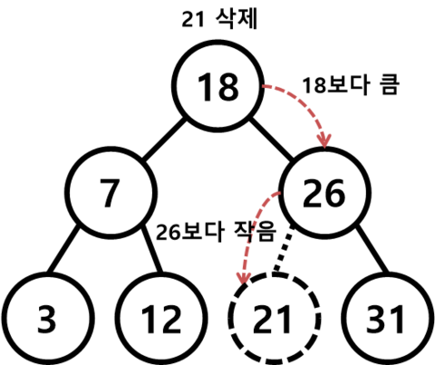

MyCloud
JAVA의 BinarySearchTree 본문
자료구조 - 이진탐색트리
앞서 포스팅했던 이진트리를 활용한 이진탐색트리입니다.
이진탐색트리는 탐색작업을 효율적으로 하기 위한 자료구조입니다!
탐색이란 사전에서 검색하고자 하는 단어를 찾거나, 서점에서 책을 찾는 것과 같이
자료를 속에서 필요한 자료를 찾아내는 것을 말합니다.
탐색구조에서 탐색을 하기 위해서 찾을 자료를 식별할 수 있는 유일한 값을 키(Key) 라고 합니다.
이진탐색트리에서는 저장할 데이터의 크기, 즉 키에 따라 노드의 위치를 정의합니다.
그리고 이진탐색트리를 중위 순회 방법(LVR)으로 순회하면 숫자 크기 순으로 정렬된다는 성질이 있습니다.

이진탐색트리의 정의는 다음과 같습니다.
1. 모든 노드의 키는 유일하다.
2. 왼쪽 서브 트리의 원소의 키는 그 루트의 키보다 작다.
3. 오른쪽 서브트리의 원소의 키는 그 루트의 키보다 크다.
4. 왼쪽과 오른쪽 서브 트리도 이진탐색트리이다.
예를 들어 위의 그림은 이진탐색트리를 나타냅니다.
왼쪽 서브트리에 있는 값들 (7, 3, 12)은 루트 노드인 18보다 작고
오른쪽 서브트리에 있는 값들 (26, 21, 31)은 루트 노드인 18보다 큽니다.
그리고 이진탐색트리를 중위 순회 방법으로 순회하면,
(3 - 7 - 12 - 18 - 21 - 26 - 31) 로 숫자들의 크기 순이 됩니다.
JAVA로 이진탐색트리 구현
1 2 3 4 5 6 7 8 9 10 11 12 13 14 15 16 17 18 | public class Node { private int data; private Node left; private Node right; public Node(int data){ this.setData(data); setLeft(null); setRight(null); } public int getData() {return data;} public void setData(int data) {this.data = data;} public Node getLeft() {return left;} public void setLeft(Node left) {this.left = left;} public Node getRight() {return right;} public void setRight(Node right) {this.right = right;} } | cs |
먼저 이진트리의 노드를 정의해줍니다.
값이 들어가는 데이터영역인 data 변수가 있고,
왼쪽 서브트리를 가리키는 left, 오른쪽 서브트리를 가리키는 right가 있습니다.
생성자를 통해 데이터 값을 넣어줍니다.
그리고 private 변수의 getters 와 setters를 만들어줍니다.
이진탐색트리의 탐색 연산

먼저 이진탐색트리의 탐색연산입니다. 항상 루트노드부터 시작합니다.
특정 키 값을 가진 노드를 찾기 위해서는 먼저 주어진 탐색 키 값과 현재 노드의 키 값을 비교해야 합니다.
비교한 결과가 같으면 탐색이 성공적으로 끝나고,
주어진 키 값이 루트 노드의 키 값보다 작으면 탐색은 왼쪽 자식을 기준으로 다시 시작,
주어진 키 값이 루트 노드의 키 값보다 크면 탐색은 오른쪽 자신을 기준으로 다시 시작합니다.
1 2 3 4 5 6 7 8 9 10 11 12 13 14 15 16 17 18 19 20 21 22 | public class BinarySearchTree { public Node root; public BinarySearchTree(){ this.root = null; } //탐색 연산 public boolean find(int id){ Node current = root; while(current!=null){ //현재 노드와 찾는 값이 같으면 if(current.getData()==id){ return true; //찾는 값이 현재 노드보다 작으면 } else if(current.getData()>id){ current = current.getLeft(); //찾는 값이 현재 노드보다 크면 } else{ current = current.getRight(); } } return false; } | cs |
탐색연산을 코드로 구현하는 방법은 재귀함수를 이용하는 방법, 반복문을 이용하는 방법 이렇게 2가지가 있습니다.
재귀함수를 이용하는 방법보다 반복문을 이용하는 방법이 효율성이 뛰어나기 때문에 2번 방법으로 구현했습니다.
if (루트 == 키값) 탐색 성공
else if (루트 > 키값) 루트의 왼쪽 서브트리에 대해 탐색연산 수행
else if (루트 < 키값) 루트의 오른쪽 서브트리에 대해 탐색연산 수행
이진탐색트리의 삽입 연산

다음은 이진탐색트리의 삽입연산입니다.
원소를 삽입하기 위해서는 먼저 탐색을 수행해야 합니다.
1. 트리에서 삽입하려는 원소에 대한 탐색을 먼저 수행
2. 탐색이 성공하면 이미 같은 원소가 트리에 있으므로 종료
3. 탐색이 실패하면 탐색이 끝난 지점에 노드를 삽입
1 2 3 4 5 6 7 8 9 10 11 12 13 14 15 16 17 18 19 20 21 22 23 24 25 26 | //삽입 연산 public void insert(int id){ Node newNode = new Node(id); if(root==null){ root = newNode; return; } Node current = root; Node parent = null; while(true){ parent = current; if(id < current.getData()){ current = current.getLeft(); if(current==null){ parent.setLeft(newNode); return; } }else{ current = current.getRight(); if(current==null){ parent.setRight(newNode); return; } } } } | cs |
코드는 위와 같습니다.
newNode는 새로 삽입하려는 노드, parent는 현재 위치로부터 루트 노드,
current는 현재 위치의 노드를 의미합니다.
만일 current가 null이면 newNode를 삽입합니다.
이진탐색트리의 삭제 연산
다음은 이진탐색트리에서 가장 복잡한 삭제연산입니다.
노드를 삭제하려면 먼저 탐색연산이 이루어져야 합니다.
노드를 탐색한 이후에 다음 3가지 경우에 따라 연산이 이루어집니다.
1. 삭제하려는 노드가 단말 노드인 경우
2. 삭제하려는 노드가 한 개의 서브 트리만 가지는 경우
3. 삭제하려는 노드가 두 개의 서브 트리를 가지는 경우

먼저 삭제하려는 노드가 단말 노드인 경우입니다.
이 경우 단말 노드의 부모 노드를 찾아 연결을 끊으면 간단히 처리됩니다.
1 2 3 4 5 6 7 8 9 10 11 12 13 14 15 16 17 18 19 20 21 22 23 24 25 26 27 28 29 | //삭제 연산 public boolean delete(int id){ Node parent = root; Node current = root; boolean isLeftChild = false; while(current.getData()!=id){ parent = current; if(current.getData()>id){ isLeftChild = true; current = current.getLeft(); }else{ isLeftChild = false; current = current.getRight(); } if(current==null){ return false; } } //Case 1: 자식노드가 없는 경우 if(current.getLeft()==null && current.getRight()==null){ if(current==root){ root = null; } if(isLeftChild==true){ parent.setLeft(null); }else{ parent.setRight(null); } } | cs |
코드는 위와 같습니다.
isLeftChild 는 왼쪽 자식과 값이 일치하는지를 확인시켜주는 flag 역할을 합니다.

다음은 삭제하려는 노드가 한 개의 서브 트리만 가지는 경우입니다.
탐색 이후 자기 노드는 삭제하고 그 서브 트리는 자기 노드의 부모 노드에 붙여주면 됩니다.
1 2 3 4 5 6 7 8 9 10 11 12 13 14 15 16 17 18 | //Case 2 : 하나의 자식을 갖는 경우 else if(current.getRight()==null){ if(current==root){ root = current.getLeft(); }else if(isLeftChild){ parent.setLeft(current.getLeft()); }else{ parent.setRight(current.getLeft()); } } else if(current.getLeft()==null){ if(current==root){ root = current.getRight(); }else if(isLeftChild){ parent.setLeft(current.getRight()); }else{ parent.setRight(current.getRight()); } } | cs |
코드는 위와 같습니다.
왼쪽에 자식이 있는 경우, 오른쪽에 자식이 있는 경우로 나뉘어집니다.
|
|
다음은 삭제하려는 노드가 두 개의 서브 트리를 가지는 경우입니다.
노드를 삭제하고 난 이후에 부모 노드의 자리를 왼쪽에 물려줄지 오른쪽에 물려줄지 선택해야 합니다.
이진탐색트리의 왼쪽 값은 루트보다 작아야 하고 오른쪽 값은 루트보다 커야하기 때문에
왼쪽 서브트리의 가장 큰 값 또는 오른쪽 서브트리의 가장 작은 값이 올 수 있습니다.
둘 중 어느 것을 선택하여도 상관이 없습니다.
1 2 3 4 5 6 7 8 9 10 11 12 13 14 15 16 17 18 19 20 21 22 23 24 25 26 27 28 29 30 31 | //Case 3 : 두개의 자식을 갖는 경우 else if(current.getLeft()!=null && current.getRight()!=null){ // 오른쪽 서브트리의 최소값을 찾음 Node successor = getSuccessor(current); if(current==root){ root = successor; }else if(isLeftChild){ parent.setLeft(successor); }else{ parent.setRight(successor); } successor.setLeft(current.getLeft()); } return true; } public Node getSuccessor(Node deleleNode){ Node successsor =null; Node successsorParent =null; Node current = deleleNode.getRight(); while(current!=null){ successsorParent = successsor; successsor = current; current = current.getLeft(); } if(successsor!=deleleNode.getRight()){ successsorParent.setLeft(successsor.getRight()); successsor.setRight(deleleNode.getRight()); } return successsor; } |
코드에서는 오른쪽 서브트리의 최소 값을 찾는 것으로 구현하였습니다.
getSuccessor 함수는 오른쪽 서브트리의 최소 값을 찾는 역할을 합니다.
찾는데 성공하면 그 값을 리턴시켜 줍니다.
출력은 중위 순회를 통해 구현했습니다.
전체 소스 및 예제는 파일첨부로 !
https://github.com/Swalloow/AlgorithmStudy/tree/master/BinarySearchTree
'Programming > Data Structure' 카테고리의 다른 글
| JAVA의 HashMap, HashTable (0) | 2016.03.20 |
|---|---|
| JAVA의 HashSet, TreeSet (0) | 2016.03.13 |
| JAVA의 BinarySearchTree (3) | 2016.03.13 |
| JAVA의 BinaryTree (0) | 2016.03.13 |
| JAVA의 Tree (1) | 2016.03.13 |
| JAVA의 Queue (0) | 2016.03.11 |